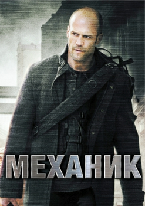
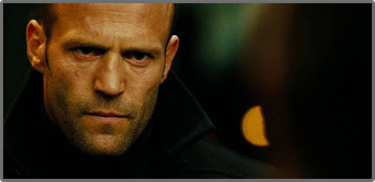

Мадагаскар 3
Madagascar 3: Europe's Most Wanted
0
7
На сайте
Июня
9,5/10
Бегемотиха Глория, жираф Мелман, зебра Марти и, конечно, лев Алекс решают вернуться в Нью-Йорк после их побега в Африку. Из-за механических инновации пресловутого шимпанзе и сумасшедших пингвинов, весь план рушится.


Пусть к вам проникнет наше настроение и останется только хорошее впечатление!
Наслаждайтесь просмотр...
Новый Человек-паук (2012)

Получив сверхчеловеческие способности, Питер Паркер пытается вести нормальную жизнь и разобраться, кем же он теперь стал. Но сейчас на нормальную жизнь ...
Смотреть сейчас
Авраам Линкольн: Охотник на вампиров (2012)

Убита мать президента Линкольна, и все указывает на вампиров. После этой трагедии Линкольн объявляет войну до полного уничтожения ...
Смотреть сейчас
Темный рыцарь: Возрождение легенды (2012)

Восемь лет спустя после событий Темного Рыцаря, в Готэм приходит новый лидер террористов, Бэйн, неся с собой хаос и разрушения ...
Смотреть сейчас

Актеры:
Джейсон Стэтхэм, Дональд Сазерленд, Бен Фостер, Тони Голдуин, Джефф Чейз, Мини Анден, Джеймс Логан, Эдди Дж. Фернандез, Джошуа Бриджуотер, Джон МакКоннелл
Продюссер:
Рене Бессон, Роберт Чартофф, Уильям Чартофф, Роб Кауэн
Режиссер:
Саймон Уэст
Сценарист:
Льюис Джон Карлино, Ричард Уэнк
Бюджет:
$40 000 000
Сборы в мире:
$40 000 000
Сборы в США:
$40 000 000
Релиз на DVD:
$40 000 000
МЕХАНИК
THE MECHANIC
Год выпуска:
2010
Страна
США
Жанр
Боевики, Триллеры, Криминал
Продолжительность:
89 мин.
Рейтинг фильма:
MDB: 6.5 Кинопоиск: 6.72
Сюжет:
Артур Бишоп очень хорошо знает свое дело. А дело его – убивать. Он наемник, лучший среди лучших. Артур всегда работает один, но ему приходится сотрудничать с молодым парнем. Теперь они команда. Вот только им все равно предстоит вступить в бой друг с другом, из которого хотя бы одному не уйти живым.
